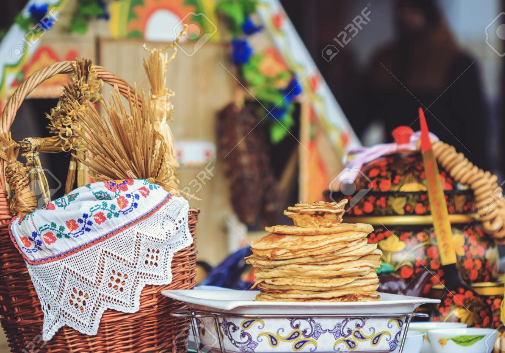

Wprowadzenie
Kuchnia białoruska ma bogatą historię sięgającą głębokiej przeszłości. Kształtowała się pod wpływem sąsiednich kultur, zachowując wiele unikalnych tradycji.
Wczesne czasy
W dawnych czasach podstawą kuchni białoruskiej były potrawy zbożowe i warzywne. Szeroko stosowano grzyby i jagody zbierane w lasach.

Średniowiecze
W średniowieczu do kuchni białoruskiej zaczęły przenikać nowe produkty i przepisy dzięki handlowym związkom z Europą i Azją. Szczególnie popularne stały się potrawy mięsne i rybne.
Współczesność
Dzisiejsza kuchnia białoruska to unikalne połączenie starych przepisów i współczesnych trendów kulinarnych. Nadal się rozwija, zachowując swoją oryginalność.